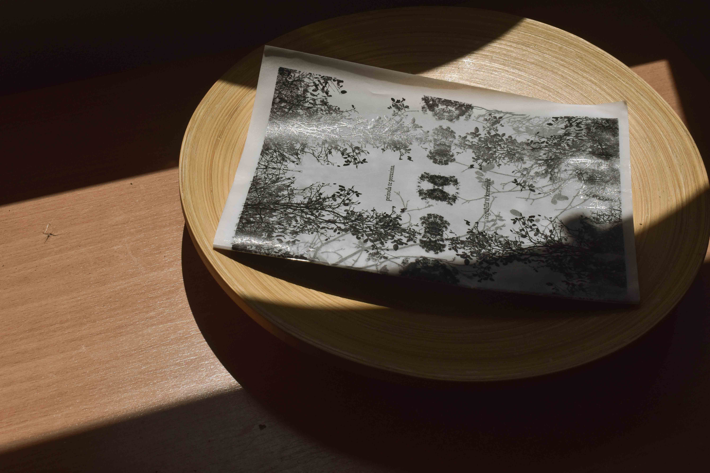
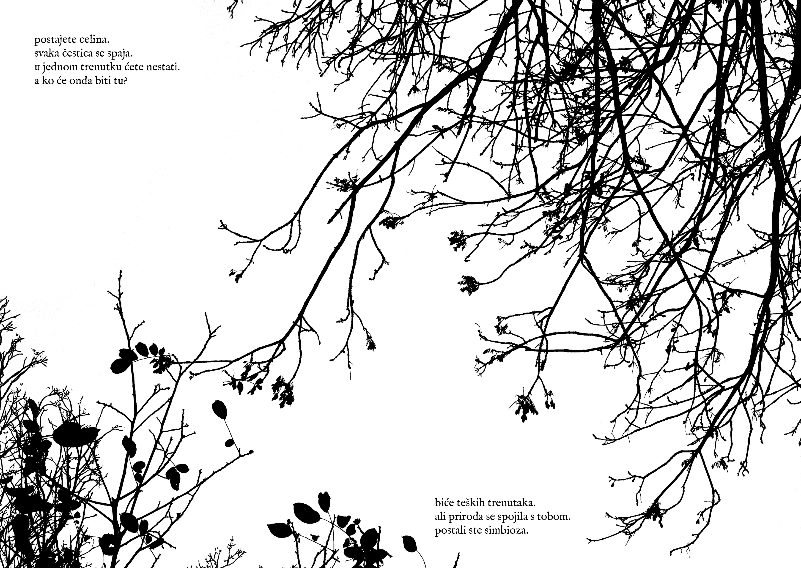
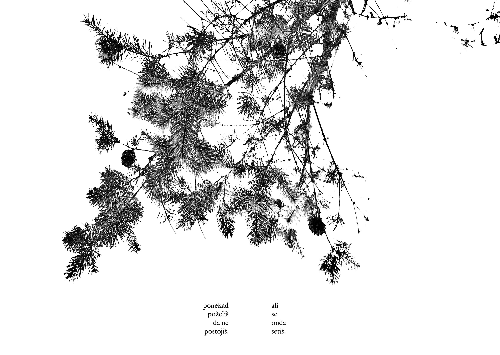
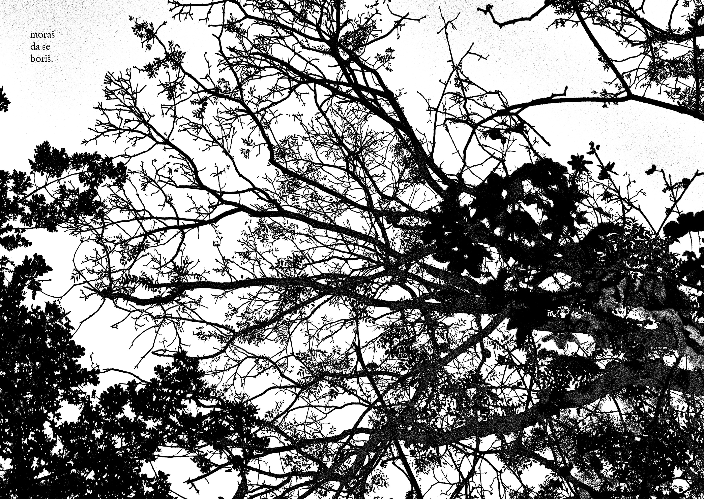
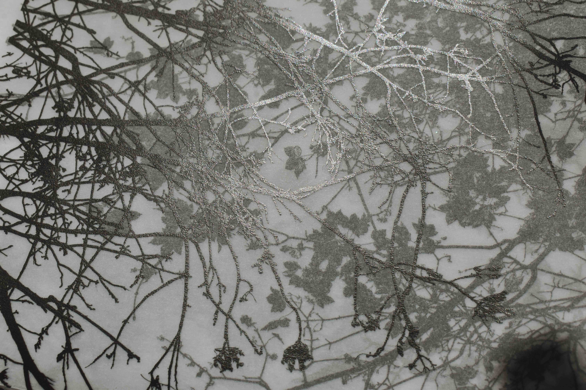
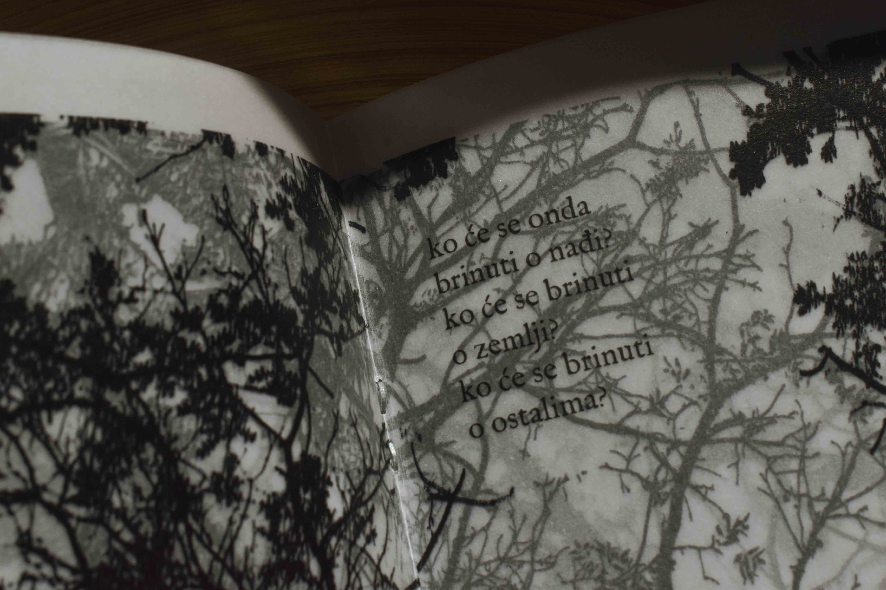
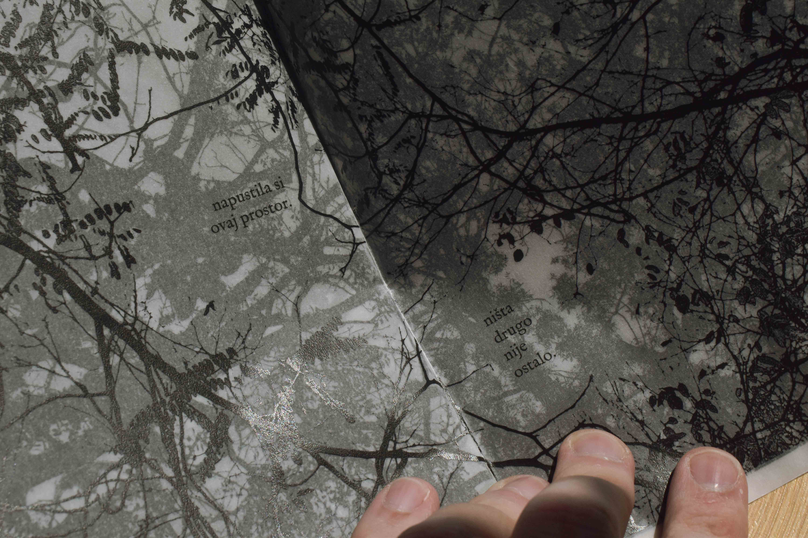

OVERGROWN (2024)
Overgrown started with the idea that the nature around me has taken control over my life, and therefore my camera. I pointed the camera at the sky, and took B&W photos of the branches above me. It is also an exploration of depression, self-destructive thoughts and a way to look for hope in the darkest moments.




Printed on tracing paper, every photo exists as a layer of one larger, connected image. It is important to mention the idea of kinship which represents the key topic of the zine, the idea that we are all connected to nature, and our emotions are guided by it. All that’s left is survival.


